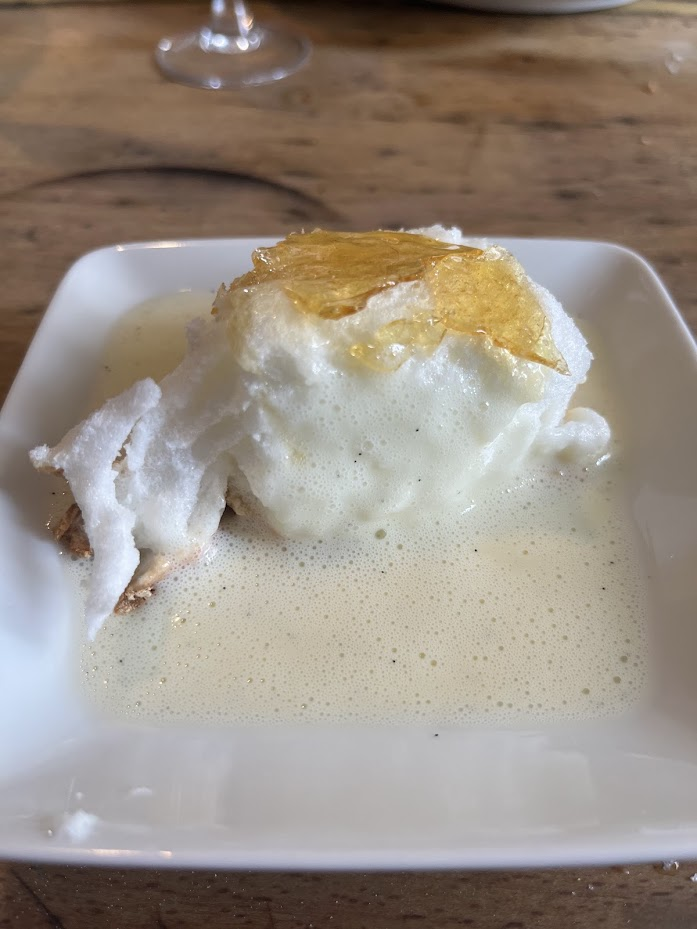

Île Flottante de Lenôtre
⏱️ 45 min
🔥 Facile
👥 6 personnes



Étapes
- Faire bouillir le lait avec la gousse de vanille fendue et grattée. Laisser infuser 10 minutes hors du feu.
- Blanchir les jaunes avec le sucre. Ajouter le lait chaud filtré, mélanger, puis remettre dans une casserole.
- Cuire à feu doux en remuant sans cesse en formant des 8. La crème est prête lorsqu’elle atteint 83°C ou nappe la cuillère. Filtrer et laisser refroidir au réfrigérateur.
- Préchauffer le four à 180°C pour les œufs à la neige.
- Monter les blancs en neige ferme avec 1/3 du sucre. Ajouter le reste du sucre en continuant de fouetter.